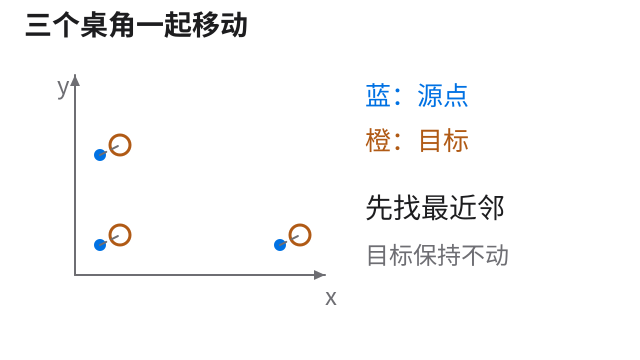
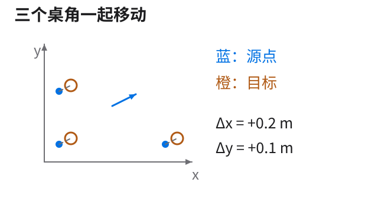
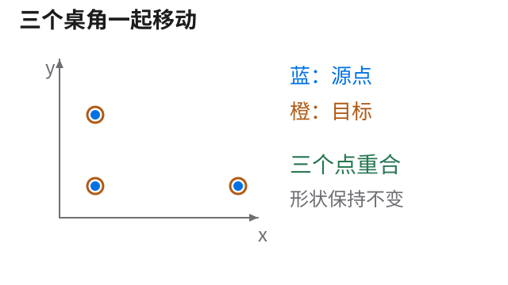
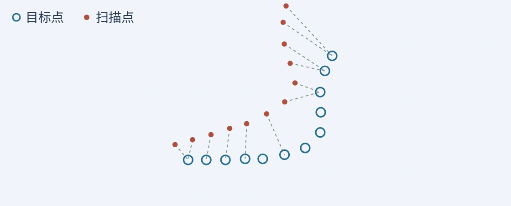

从桌子两侧给它量尺寸，两份草图都画得对，叠起来却未必对齐。两个人选了不同的原点和朝向。点云配准做的是相似的事，只不过图上可能有几万个点，而且没人提前说明哪两个点画的是同一处。
先规定移动哪一份点云
把这次扫描称为源点云，把选定的参考扫描称为目标点云。希望找到一个刚体变换，让源点云经过同一次旋转和平移后，对齐目标点云。刚体意味着桌面不会伸长，桌腿也不会弯。如果同一桌边在两份数据中分别量出 1 米和 100 个单位，需要先统一单位；仅凭一次旋转和平移无法让它们等长。
把源点写成 p，旋转写成 R，平移写成 t。源点在目标坐标系里的新位置为 R p + t。这个方向很重要。如果软件要的是把目标搬回源坐标系，就得用逆变换。无需看整幅彩色图，用一个已知角点代入，看它是否落到预期位置，就能检验方向。
拿三个桌角手算一轮
画一个平面例子。源点坐标分别是 (0,0)、(2,0)、(0,1)，目标点分别是 (0.2,0.1)、(2.2,0.1)、(0.2,1.1)，单位为米。先把旋转固定为零，从原位置出发，为每个源点寻找最近的目标点。因为偏差很小，三个最近邻刚好都找对了桌角。
把一轮 ICP 拆成三幅图
先把旋转固定，只学习平移。三个源点是 (0,0)、(2,0)、(0,1) 米；对应目标都比源点多 (0.2,0.1) 米。画面放大了细小的配对间距。

找到三组对应
查看大图
先看位置关系，再看公式。蓝色是待移动的源点，橙色空心圆是固定目标。这个例子初始偏差很小，三个最近邻都恰好对应同一个桌角。真实点云中最近邻也可能认错物体，所以这一组正确配对是需要检查的条件。

计算同一个平移
查看大图
每条虚线都给出“目标位置减源位置”的差。三组差值都是向右 0.2 米、向上 0.1 米，它们的平均值仍是这个向量。把同一个平移加给全部源点，就像搬动整张透明纸，三个桌角之间的距离不会因此改变。

移动后再核查
查看大图
施加平移后，蓝点落到橙色圆心。重新找最近邻并计算误差，才能确认更新后的状态。这里没有噪声且旋转固定，所以一轮就重合；实际 ICP 会交替做配对与变换估计，误差变小也不自动保证配到了正确房间。
刚体配准对所有点使用同一个变换。它会改变位置和朝向，不会把某一条桌边单独拉长。
小练习：如果三个对应差分别为 (0.1,0)、(0.2,0)、(0.3,0) 米，等权平方误差下应平移多少？
向右平移 0.2 米。取三个差向量的平均值后，两端各留下 0.1 米残差，中间一组重合。
对于已知的三组配对，每一组“目标减源”都是 (0.2,0.1)。它们的平均值就是这一轮应施加的平移。移动后重新计算三个差值，全部变成零。有噪声时三个差值不会完全相等；在固定旋转、等权重、平方误差的条件下，取平均仍是最佳平移。三维情况下，算法还会利用点相对于各自质心的分布来估计旋转。

加入旋转时，先比较点的形状
再试一次平面配准，仍使用 (0,0)、(2,0)、(0,1) 三个源点，这一次直接给出正确对应。目标三点分别为 (4,1)、(4,3)、(3,1)。源点从第一点指向第二点的向量为 (2,0)，目标中的对应向量为 (0,2)。二者长度相同，方向差逆时针九十度。把三个源点绕原点旋转九十度，第三点从 (0,1) 到 (−1,0)。最后统一加 (4,1)，它就落到目标 (3,1)。
真实配准没有这么清晰的直角，但按质心拆开问题仍有用。先将每组点减去各自质心，使整体平移不再影响方向比较；估计出旋转 R 后，平移可由“目标质心减去旋转后的源质心”得到。若有人把示例的平移简单写成两组原始质心之差，将结果代入第三个角点就能看出错误。
为什么要反复寻找配对
实际雷达从新角度很少正好扫到上一次的同一粒灰尘。ICP 先按当前变换寻找最近邻，再求能让这些配对尽量靠近的增量变换，更新并重复。缩写中的“迭代”指的就是配对与估计变换交替进行。更新很小或达到迭代上限时可以停止；迭代停止只说明达到了停止条件。
想象两排同款椅子间隔两米。若初始位置错开整整一个椅距，最近邻可能把第一把椅子配到第二把。每轮误差看起来都在变小，错误的对应关系却越发稳定。可以先用里程计、已知标志或粗配准提供初值。设置合理的最大对应距离也有帮助；过小时，真正重合的区域都找不到配对，过大时又容易把相邻物体串起来。
空心圆是固定的目标，实心点是移动的扫描。虚线表示当前的最近邻配对。这是二维点到点 ICP 示例。

第 0 次是初始位置。每次迭代重新寻找最近邻，再计算旋转和平移。
点到面误差为什么会漏掉一种运动
点到点方法计算两个位置之间的三维距离。点到面方法则取目标表面的一条单位法向量，也就是垂直于表面的单位方向，把两点的差投影到该方向。对于一面竖直白墙，点沿墙面滑动十厘米，法向上的距离仍可能为零。只有这面墙时，点到面误差很难告诉我们沿墙滑了多远。墙与地板的交线、垂直的另一面墙或独立路标能提供其他方向的约束。
验证配准时选一个没有参与求解的局部结构，如墙角旁凸出的插座。固定观察方向，比较它在两份点云中的位置。再一起看有效对应的比例和有效对应的均方根误差。仅剩很小一块重叠区域时，误差再低也代表不了整间屋子。把初值轻轻向两个方向扰动后重复计算，还可以观察解是否稳定地回到同一位置。
在对应范围固定时，还可以直接手算均方根误差。两条有效对应的距离若为 0 和 0.10 米，平方后求平均，再开方，约为 0.071 米。缩小对应距离阈值到 0.05 米后，第二条对应被剔除，剩下的误差变为零。点云本身没有移动，这就是比较分数时必须同时报告阈值和覆盖范围的原因。
先决定成功指什么，再读误差
同一房间如果只扫描了半边，没看见的另一半本来就不应有配对。评估时记录最大对应距离、有效对应数量、两云重叠的位置及独立检查点的偏差。采样密度差异大时，一块很密的墙面可能在损失中占去绝大多数分量；可以用相同尺寸的体素对两云降采样，再比较对齐。
练习时让目标点云保持在原地，只改变源点云的初始朝向。画出每轮最近邻连线，先观察哪些线连错了，再读误差曲线。若每一轮都能解释墙的法向距离，窗沿却沿墙错开，可以主动加入与墙近乎垂直的几何作检查。由哪一段表面提供哪一方向的约束，比单报“收敛”更接近这个问题的答案。